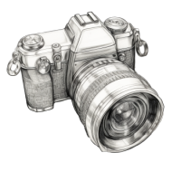
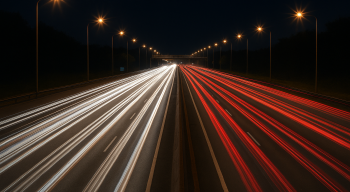
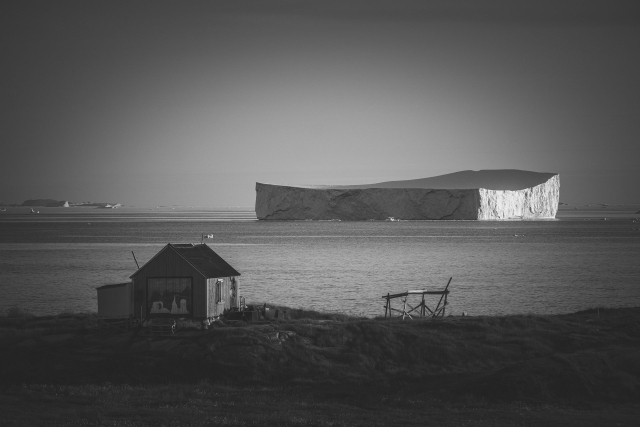
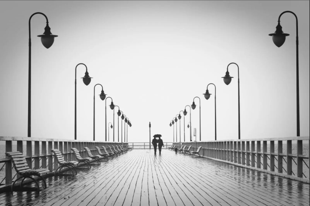
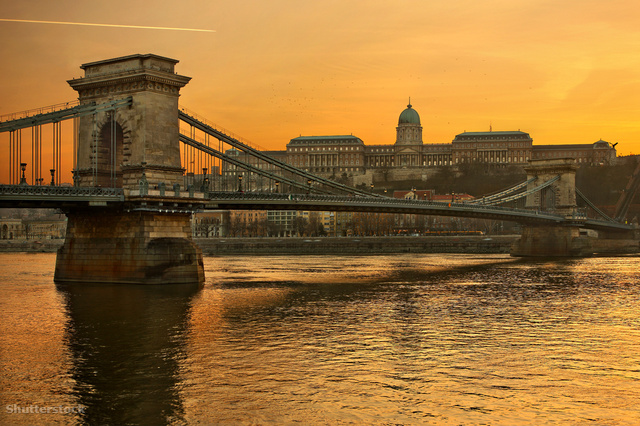
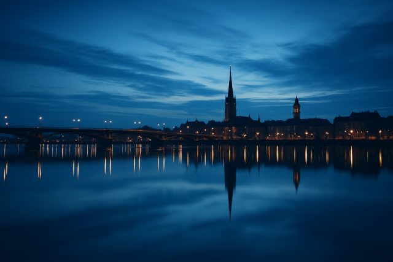

Photo-zás
A fényképezés alapjai
A fényképezés célja az elénk táruló világ, az abban lévő emberek, növények, állatok, tájak, formák, árnyékok-fények, stb... megörökítése. Célja lehet az emlékmegőrzés, a dokumentálás, a művészi kifejezés vagy akár tudományos megfigyelés is. A mai digitális korban mindenki zsebében ott lapul egy fényképezésre alkalmas eszköz – minimum a mobiltelefonja –, és a fényképezés alapelvei ugyanazok maradtak, mint az analóg korszakban.
A lényeg, hogy örömünket leljük benne, legyen ez akár egy hobbi, egy életérzés, de legyen szórakoztató, amivel adott esetben ki is fejezhetjük magunkat.
A fényképezés technikai alapfogalmai
Záridő (Shutter Speed)
A záridő az az időtartam, mialatt a fény bejut a fényképezőgépbe. Hogy a kép elkészüljön, az elénktáruló világot meg kell mutatni a képrögzítőnek, ami azt rögzíti. Minél tovább nyitva van az objektívben, vagy akár a fényképezőgépben található rekesz, annál több fény jut be. Ez jó, ha sötétben akarunk képezni, tűző napsütésben viszont nagyon sok fény jutna be és "elégetné" a képet. Ahhoz, hogy megfelelően látszódjon minden a kész képen, - a rekesz mellett - a záridővel szabályozzuk azt az időt, amíg az fényt enged be.
Ha gyors záridőt használunk (pl. 1/1000 másodperc), akkor meg tudjuk állítani a mozgást, pl. egy gyorsan mozgó embernél, játék közben.
Lassú záridő esetén (pl. 1 másodperc) bemozdulás is megjelenhet a képen, amely kreatívan használható, pl. ahogy az autópályán elsuhanó járművek lámpái csíkot húznak.
Rekesz (Aperture)
A rekesz az objektívben található lamellák által alkotott nyílás, amely szabályozza a bejutó fény mennyiségét és a mélységélességet.
A kisebb rekeszérték (pl. f/1.8 1 ) több fényt enged be és kisebb mélységélességet eredményez, míg a nagyobb érték (pl. f/16) kevesebb fényt enged be, de nagyobb rész lesz éles a képen.
ISO érzékenység
Az ISO érték határozza meg a szenzor fényérzékenységét. Jó fényviszonyok között az alacsony ISO (pl. (50) 100) tiszta, zajmentes képet eredményez, míg magas ISO (pl. 3200 vagy több) gyenge fényviszonyok mellett segít, azonban zajosabb képet adhat. Az újabb gépek (illetve a képfeldolgozó szoftverek) azonban nagyon jól tudják kezelni a zajos képet és ezért sötét helyen - pl. koncerteken, belső terekben - bátran lehet használni magasabb ISO értékeket!
Kompozíciós alapelvek
Harmadolási szabály (Rule of Thirds)
A fényképészeti harmadolás (The Rule of Thirds) egy vizuális kompozíciós technika, amely a képmezőt két-két vízszintes és két-két függőleges vonallal kilenc egyenlő részre osztja, és a kompozíció fő elemeit e vonalak metszéspontjaira vagy mentén helyezi el.
Ez a módszer dinamikusabbá és harmonikusabbá teszi a képeket, elkerülve a fő témák unalmas, középre helyezését, és kiegyensúlyozottabbá téve a vizuális elrendezést.
Vezető vonalak (Leading Lines)

Az emberi szem automatikusan követi a képen belüli vonalakat. Ezért fontos, hogy az utak, kerítések, folyók vagy más természetes vonalak vezessék a néző tekintetét a témához.
Fény és árnyék szerepe
A fény a fényképezés lényege. A különböző fényviszonyok különböző hangulatokat keltenek. A természetes fény (napfény) előnye az egyszerűség és természetesség.
A mesterséges fényforrások (pl. vaku, LED-lámpák) kontrolláltabbak, és bármikor rendelkezésre állnak, de igénylik a világítás ismeretét (színhőmérséklet 2 ).
Arany óra és kék óra
Az arany óra a fotózásban a napfelkelte utáni és a naplemente előtti rövid időszakot jelenti, amikor a nap alacsonyan jár, és lágy, meleg, aranyló fény árasztja el a tájat. Ez a fény tökéletes a fotózáshoz, mivel szép, egyenletes megvilágítást biztosít, és kiemeli a színeket.
Miért érdemes fotózni az aranyórában?
Lágy, meleg fény: A fény ideális portrékhoz, tájképekhez és bármilyen kültéri fotózáshoz.
Kiemeli a színeket: A meleg fény kiemeli a természetes színeket, és élénkebbé teszi a fotókat.
Lágy árnyékok: Az alacsonyan járó nap lágy árnyékokat vet, ami dinamikát ad a képeknek.
Kreatív lehetőségek: Az arany óra ideális a kísérletezésre, például sziluettek készítésére vagy a fényekkel való játékra.
Tippek az arany óra fotózáshoz
Tervezd meg a fotózást:
A kék óra a naplemente utáni, illetve a napfelkelte előtti rövid időszakot jelöli, amikor a Nap már a horizont alatt van, de még (vagy már) megvilágítja a légkört. Ekkor a fény kékes árnyalatot ölt, a kontrasztok kiegyenlítődnek, és egészen különleges atmoszféra alakul ki.

A kék óra elnevezés abból fakad, hogy ebben az időszakban az ég színe mély, gazdag kékbe fordul, amely teljesen eltér a nappali világos égbolt vagy a naplemente meleg színeitől. Fizikai magyarázata a Rayleigh-szórás jelensége: amikor a Nap a horizont alatt van, a fény hosszabb utat tesz meg a légkörben, a rövidebb hullámhosszú kék fény kevésbé szóródik, így domináns színként jelenik meg. A kék árnyalat tisztaságát és intenzitását befolyásolja a levegő páratartalma, a felhőzet, valamint a környezeti fényforrások jelenléte is. Fotográfiai szempontból a kék óra igazi kincs. A nappali fotózással ellentétben ekkor a fények nem élesek, nem vetnek erős árnyékot, a színek harmonikusak és kiegyensúlyozottak. A világítás lágyabb, ami portréknál előnyös, ugyanakkor a tájképek és városképek is misztikus hangulatot kapnak. A kék ég háttérként különösen jól működik: épületek, hidak, szobrok, fák vagy hegyek sziluettjei drámai kontrasztban jelenhetnek meg. A mesterséges fények, például a városi lámpák, kirakatok vagy autók fényei is sokkal hangsúlyosabbak lesznek ebben az időszakban, mivel szépen kiegészítik a természetes kék tónust.
Stabilizálás
A stabilizálás a fényképezés egyik kulcsfontosságú technikai eleme, amely segít elkerülni a bemozdulásból eredő életlen képeket, így hosszabb záridővel is éles fotókat készíthetünk, akár kézből, akár gyenge fényviszonyok között. A bemozdulás leggyakrabban akkor jelentkezik, amikor a fényképezőgépet kézben tartjuk, és a záridő túl hosszú ahhoz, hogy a kéz remegését kiküszöbölje. Ez különösen problémás lehet éjszakai fotózásnál, beltéri felvételeknél vagy teleobjektív használatakor.
A stabilizálásnak két fő típusa van: optikai és digitális. Az optikai stabilizálás (OIS) az objektívben vagy a fényképezőgép szenzorában található mozgó elemekkel működik, amelyek a kéz mozgását érzékelik, és ellenirányú mozgással kompenzálják azt. Ez a módszer rendkívül hatékony, különösen teleobjektíveknél vagy videózásnál. A szenzorstabilizálás (IBIS – In-Body Image Stabilization) a fényképezőgép szenzorát mozgatja, így bármilyen objektívvel használható, és akár több tengelyen is képes kompenzálni a mozgást.
A digitális stabilizálás szoftveres úton történik, a fényképezőgép vagy utómunka során elemzi a képet, és korrigálja a bemozdulásokat. Ez főleg videónál elterjedt, de minősége elmarad az optikai megoldásoktól.
A stabilizálás nem csak technikai előny, hanem kreatív lehetőségeket is kínál: lehetővé teszi a hosszú expozíciós idővel készült, éjszakai vagy mozgásos (lásd lassú záridő) képek elkészítését, miközben a kép éles marad. A stabilizálás tehát a modern fényképezés elengedhetetlen része, amely segít a fotósoknak a lehető legjobb minőségű képek elkészítésében, függetlenül a körülményektől.
A fentieken kívül léteznek olyan praktikák, amelyek segítenek elkerülni a bemozdulást. A legegyszerűbb az, amikor a fényképezőgépet stabilan, a kezeinket magunkhoz szorítva megtarjuk, jobb kezünkkel a gépet fogva, míg a bal kézzel az objektívnél alátámasztva elég hatásosan lehet elkerülni a képek bemozdulását. Ha tudjuk, le is tehetjük a gépet egy stabil talapzatra - pad, kerítés, stb... - és onnan - a megfelelő beállításokat alkalmazva - időzítőt használva akár még szelfit is készíthetünk.
Jól jöhet állvány, tripod-monopod 3 használata, amelyre rögzítve a gépet akár magára is hagyhatjuk pl. éjszakai égbolt fotózásra.
Gyakorlati tippek
Portréfotózás
Portré készítésekor fontos a háttér elmosása (kis mélységélesség), a megfelelő fény (pl. oldalfény), és a modell természetes beállítása. Hasznos lehet egy 50mm-es objektív f/1.8-as (nagyra nyitott) rekesszel.
Tájképfotózás
Tájképekhez nagy mélységélesség kell (szűkebb rekesz: f/8–f/16), és érdemes állványt használni. A kompozícióban figyeljünk a horizont vízszintességére és a vezető vonalak használatára.
Makrófotózás
Apró részletek (pl. rovarok, virágok) megörökítése. Speciális makróobjektívet igényel. A fókusz pontos beállítása és a stabilitás kulcsfontosságú.
Digitális utómunka
A készült képeket - elvárás szerint - lehet azonnal megosztani, szinte szerkesztés nélkül. Lehetőség van sok fényképezőgépen magán alapvető szerkesztési műveleteket (átkonvertálás, képarány, fehéregyensúly, stb...) elvégezni, de a fotósok többsége az elkészített képeket utólag, számítógépen szerkeszti. Ez nem „csalás”, hanem a kreatív kifejezés része.
Alapvető lépések: expozíció beállítása, színkorrekció, élesítés, vágás.
Népszerű programok: Adobe Lightroom, Photoshop, Snapseed, GIMP.
És végül...
A fényképezés egyáltalán nem csak technikai tudáson alapszik, hanem ötletességen, ötletelésen, megfigyelésen és türelmen is. Nem kényszer, nem sürgős (kivéve persze, ha az arany órát, vagy a kék órát akarod megörökíteni), bármikor tudsz fotózni. Lassan minden ember kezében van egy eszköz, amely alkalmas képek rögzítésére, legyen az mobiltelefon, fényképezőgép, de akár kaputelefon is lehet, ha ügyes a fotós... : ) A lehetőség mindenki számára adott, és a fejlődéshez csak gyakorlás, kíváncsiság és nyitottság szükséges. Néha fel kell mászni, vagy le kell ereszkedni valahova ahhoz, hogy a megfelelő kompozíció meglegyen, de megéri az a kiszakadt farmer, vagy kilyukasztott kabát!
... egy jó tanács!
Vidd magaddal a géped, nyisd ki a szemed és kezdj el fotózni – mert a legjobb kép mindig az, amit még nem készítettél el!
Addig csak próbálkozol!
Lábjegyzet:
1/ F-szám (blendeérték) Az F-szám a fényképezőgép rekeszének nyílását jelenti, és fordítottan arányos a gyújtótávolsággal. Egy alacsony F-szám (pl. f/1.4) nagy rekesznyílást jelent, míg egy magas F-szám (pl. f/16) kis rekesznyílást jelöl. Ezek a számok befolyásolják a kép mélységélességét és a kép elkészültéhez szükséges fény mennyiségét.
2/ A fotózásban a színhőmérséklet (Kelvinben, K-ban mérve) a fény színét jelenti, ami befolyásolja a kép hangulatát és a színek valósághűségét. A magasabb Kelvin érték kékebb fényt, míg az alacsonyabb érték sárgásabb fényt jelent. A különböző fényforrásoknak eltérő színhőmérsékletük van (pl. a napfény 5600 K, a gyertyák 1000 K), ezért a fotósnak be kell állítania a fehéregyensúlyt, hogy a kép színei természetesek maradjanak.
3/ A tripod - ahogy a neve is mutatja - háromlábú állvány, amely stabilitást ad. A monopod "egylábú", kisebb helyen elfér, könnyebb kezelni, cipelni, de kevésbé stabil. A "zsinórállvány" egy, a fényképezőgép állványcsatkozójába illő csavarral a váz alsó részére erősített zsinőr, amelyre rálépve és a zsinórt megfeszítve stabilan meg tudjuk tartani a képrögzítő eszközt.
© 2025 - levaikaroly - Minden jog fenntartva!
Inspired & Powered by